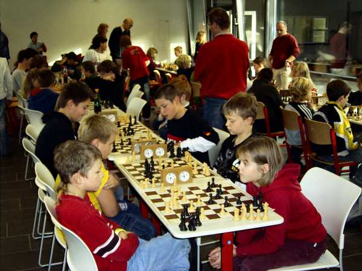
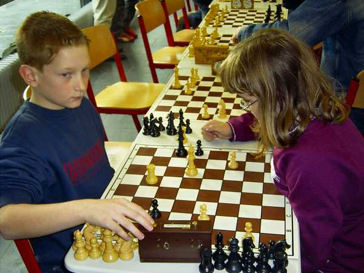
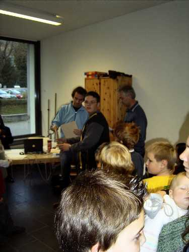

Turnieratmosphäre im Hochrhein Gymnasium


Lukas Sterzik erkämpfte Platz 2 in der U12.

Rafael Sterzik hatte es schwer...

Jochen Bahner erreichte trotz dieses Schnitzers (Schwarz gewann) ...

... noch Platz 3 in der U14.
Der SC Laufenburg war mit 3 Jugendspielern beteiligt.